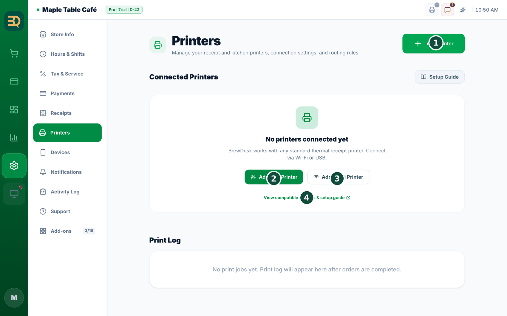
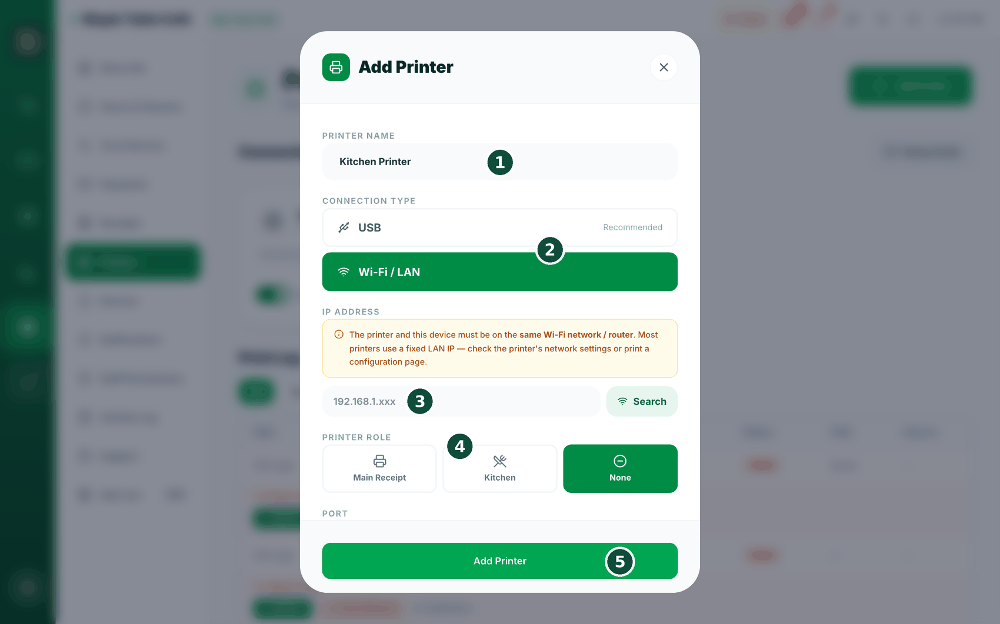
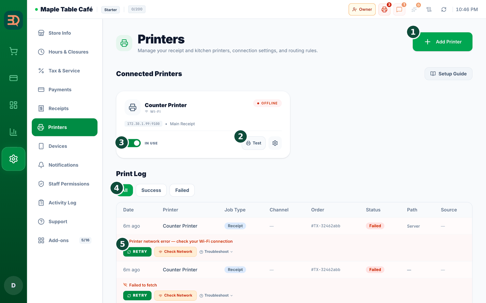
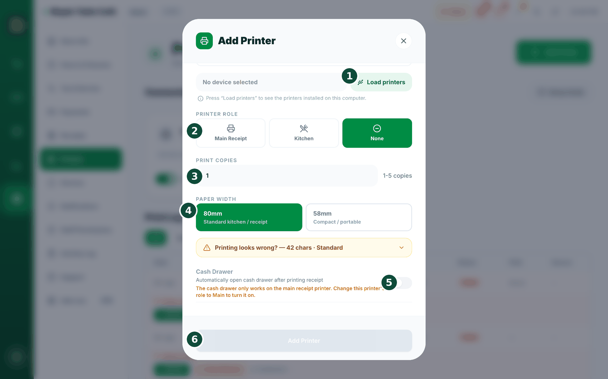
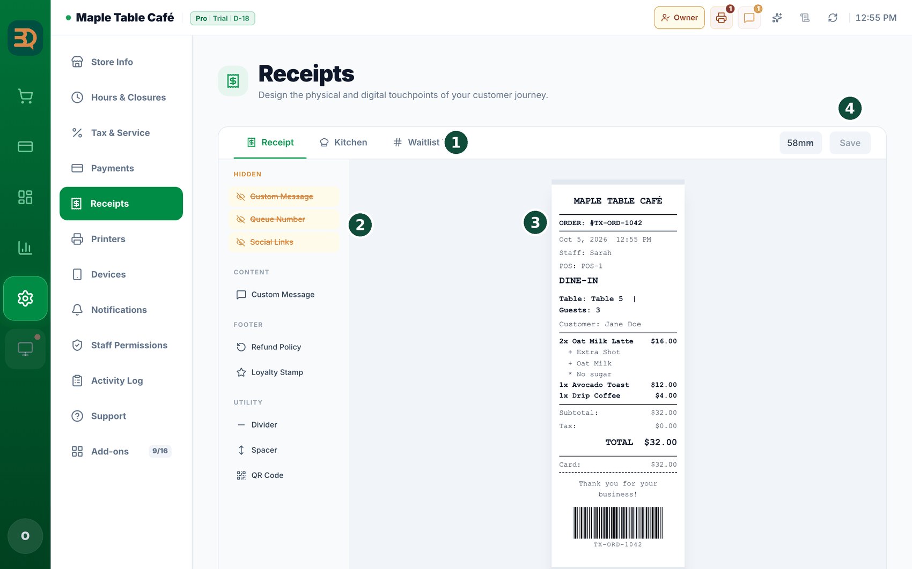
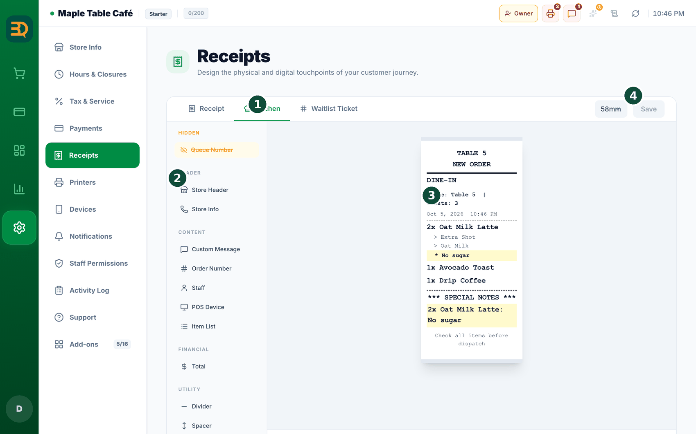
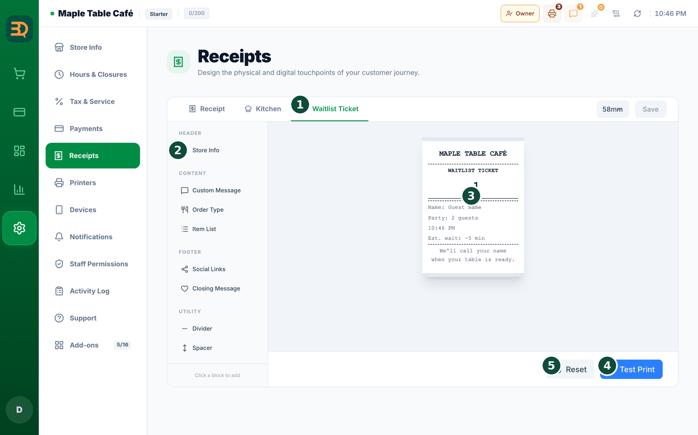

24Recibos e impresoras
BrewDesk puede imprimir recibos para los clientes y comandas para la cocina. Agreguemos una impresora paso a paso. Y si alguna vez una impresora se atasca, su pedido sigue a salvo.



- Abra
Settings › Printers. Verá Connected Printers (Impresoras conectadas) y los botones Add USB Printer (Agregar impresora USB), Add Wi-Fi Printer (Agregar impresora Wi-Fi) y Add Printer (Agregar impresora). - Toque Add Wi-Fi Printer (o Add USB Printer (Agregar impresora USB)). Se abre la ventana de la impresora.
- Escriba un Printer Name (Nombre de impresora), como "Impresora de cocina", para poder distinguir sus impresoras.
- Elija un Connection Type (Tipo de conexión): USB o Wi-Fi/LAN.
- Para Wi-Fi: escriba la IP Address (Dirección IP) de la impresora (como 192.168.1.50) y el Port (normalmente 9100), y toque Connect (Conectar). Si solo conoce parte de la IP, toque Search (Buscar) para buscarla.
- Para USB: en Select installed printer, toque Load printers y elija su impresora de la lista. (La app de escritorio de BrewDesk debe estar abierta, y la impresora debe estar instalada en su sistema operativo para aparecer en la lista).

- Elija el Printer Role (Rol de impresora): Main Receipt (recibos de clientes), Kitchen (comandas de cocina) o None (sin función).
- Si es una impresora de cocina, elija un Kitchen Print Mode (Modo de impresión cocina): Whole Order (una comanda por pedido) o Per Item (una comanda por producto). Indique Print Copies (Copias de impresión) si quiere más de una copia.
- Toque Test Print (Imprimir prueba) para imprimir una página de prueba y luego toque Add Printer (Agregar impresora) para guardarla.
Es bueno saberlo: las impresoras de 80 mm ahora usan de forma predeterminada 42 caracteres por línea, lo que sirve para la mayoría; si sus recibos se ven bien, no lo cambie. Si ningún bloque se ve bien, elija Enter number (Ingresar número) y escriba el número de la regla que aparece al final del recibo de prueba (20–96).
Esta es la forma fácil. Instale el controlador de su impresora de la forma habitual (en Mac suele ser automático; en Windows se usa el controlador del fabricante), abra la app de escritorio de BrewDesk y luego, en Settings › Printers › "Add USB Printer", elija Select installed printer › Load printers y selecciónela. Las impresoras Wi-Fi / LAN tampoco necesitan este proceso.
Números de pedido y de turno
En el servicio de mostrador, cada pedido recibe un número. Es ideal para anunciar "¡ahora atendemos el número A-005!" y que los clientes sepan cuándo está lista su bebida. Así se configura y se muestra en el recibo.
- Abra
Settings › Tablesy busque las opciones de Counter Mode (Modo mostrador). - Active Auto Order Number (Número de pedido automático) para que cada pedido tenga su propio número.
- Defina un Number Prefix (Prefijo de número) si quiere; por ejemplo, A-001.
- Active Daily Reset (Reinicio diario) para reiniciar la numeración cada día y empezar de cero cada mañana.
- El número se imprime en el recibo como número de pedido; por ejemplo, "ORDER: #TX-ORD-1042".
También puede diseñar el aspecto de sus recibos en Settings › Receipts. Hay pestañas para Receipt (Recibo), Kitchen (Cocina), Queue Number (Número de turno) y Waitlist Ticket (Ticket de Espera). Arrastre bloques para mostrar u ocultar cosas como un Queue Number (Número de turno) grande, un mensaje personalizado, una política de reembolsos, un sello de fidelización o un código QR. La vista previa de la derecha muestra exactamente cómo se imprimirá.



Temas relacionados
¿Necesita más ayuda?
Puede enviar un ticket de soporte desde la app en Settings › Support.